馥郁烘焙 [Let's Do] Bakery
共 94 个条目 · bakery
版本: 2.1.6 · 来源: letsdo-bakery-neoforge-2.1.6.jar
Build your own bakery, bake the finest pastries, delicious bread, and sweet cakes!
MC百科中文名: 馥郁烘焙
MC百科页面: https://www.mcmod.cn/class/11101.html（馥郁烘焙 (Let's Do: Bakery) - MC百科|最大的Minecraft ...）
官方介绍 （Modrinth · 中文版由 GLM AI 翻译，仅供参考）
香甜糕点与金黄酥皮
Farm & Charm 的烘焙扩展
"新鲜出炉"
Bakery（面包坊）会把你的厨房变成一间完整的糕点工坊。揉好面团，为作品淋上糖衣，把蛋糕层层叠高，让架子上摆满金黄的面包和五彩缤纷的甜点。
把你的面包坊梦想变为现实，在村子里开起最温馨的甜点铺。
Bakery 通过多层次的制作步骤、装饰性陈列和风味十足的食物效果，拓展了 Let's Do 系列的烹饪深度，与 Farm & Charm 相辅相成。
制作与创造
- 面包、纸杯蛋糕、蛋糕、挞、酥皮点心等等
- 通过上釉台、烘焙台和蛋糕台进行多步骤制作
- 甜点效果可以叠加，适度享用即有回报
- 高饱和度的餐点，提供更持久的滋养
精准、耐心，还有恰到好处的时机。
风味效果
- 甜点能带来短暂而强力的速度与力量提升
- 胆子够大的话，效果最多可叠加十层
- 丰盛的烘焙食品能提升饱食度、减缓饥饿消耗
请理性享用。
装饰之趣
- 用蛋糕架和面包篮展示你的作品
- 户外咖啡厅家具，打造你梦想中的面包店
- 可摆放的面包与糕点，兼作装饰
- 与 Farmers Delight、Candlelight 等模组无缝联动
祝你烘焙愉快。
需要 [Let's Do] Farm & Charm
预热烤箱。
揉好面团。
用心烘焙。
献给 MissLilitu
Let's Do 因社区而成长。
由 GLM AI 翻译，仅供参考
查看英文原文（Modrinth）
Sweet Pastries & Golden Crusts
The baking extension to Farm & Charm
"Fresh from the oven"
Bakery transforms your kitchen into a full pastry workshop. Knead the dough, glaze your creations, stack your cakes high and fill your shelves with golden loaves and colorful sweets.
Turn your bakery dreams into reality and build the coziest patisserie in the village.
Bakery expands the culinary depth of the Let's Do collection with layered crafting steps, decorative displays, and flavorful food effects designed to complement Farm & Charm.
Craft & Create
- Bread, cupcakes, cakes, tarts, pastries and more
- Multi-step preparation with Glazing, Baking and Caking stations
- Stackable sweet effects that reward indulgence in moderation
- Saturated meals that provide longer-lasting nourishment
Precision, patience, and perfect timing.
Flavorful Effects
- Sweets grant short but powerful boosts to speed and strength
- Effects stack up to ten times for those who dare
- Hearty baked goods provide increased satiation and reduce hunger loss
Enjoy responsibly.
Decorative Delights
- Cakestands and breadbaskets to display your creations
- Outdoor café furniture to design your dream bakery
- Placeable breads and pastries that double as decor
- Seamless integration with Farmers Delight, Candlelight and more
Have fun baking.
Requires [Let's Do] Farm & Charm
Preheat the oven.
Knead the dough.
Bake with heart.
Dedicated to MissLilitu
Let’s Do grows through its community.
物品与方块
bakery:apple_cupcake · 物品
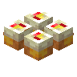
苹果纸杯蛋糕bakery:apple_cupcake_block · 方块
 苹果果酱
苹果果酱bakery:apple_jam · 方块
 苹果派
苹果派bakery:apple_pie · 方块苹果派切片
bakery:apple_pie_slice · 物品
 bakery:baguette
bakery:baguettebakery:baguette · 物品
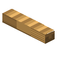
法棍面包bakery:baguette_block · 方块
 烘焙台
烘焙台bakery:baker_station · 方块
 全物品收集者旗帜：§c馥郁烘焙
全物品收集者旗帜：§c馥郁烘焙bakery:bakery_banner · 方块
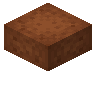
蛋糕胚bakery:blank_cake · 方块
 bakery:braided_bread
bakery:braided_breadbakery:braided_bread · 物品
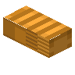
辫子面包bakery:braided_bread_block · 方块
 bakery:bread
bakery:breadbakery:bread · 物品
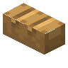
烘焙师面包bakery:bread_block · 方块
 面包篮
面包篮bakery:bread_crate · 方块
 面包刀
面包刀bakery:bread_knife · 物品
 果酱面包
果酱面包bakery:bread_with_jam · 物品
 面包盒
面包盒bakery:breadbox · 方块
 红砖柜台
红砖柜台bakery:brick_counter · 方块
 bakery:bun
bakery:bunbakery:bun · 物品
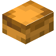
小圆面包bakery:bun_block · 方块
 圆环蛋糕
圆环蛋糕bakery:bundt_cake · 方块圆环蛋糕切片
bakery:bundt_cake_slice · 物品
 橱柜
橱柜bakery:cabinet · 方块
 蛋糕展示柜
蛋糕展示柜bakery:cake_display · 方块
 蛋糕面团
蛋糕面团bakery:cake_dough · 物品
 蛋糕展示台
蛋糕展示台bakery:cake_stand · 方块
 巧克力礼盒
巧克力礼盒bakery:chocolate_box · 方块?巧克力蛋糕
bakery:chocolate_bread · 物品
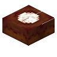
巧克力蛋糕bakery:chocolate_cake · 方块巧克力蛋糕切片
bakery:chocolate_cake_slice · 物品
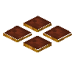
巧克力釉面饼干bakery:chocolate_cookie_block · 方块
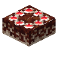
法式巧克力大蛋糕bakery:chocolate_gateau · 方块
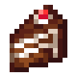
法式巧克力大蛋糕切片bakery:chocolate_gateau_slice · 物品巧克力釉面饼干
bakery:chocolate_glazed_cookie · 物品
 巧克力酱
巧克力酱bakery:chocolate_jam · 方块
 巧克力挞
巧克力挞bakery:chocolate_tart · 方块巧克力挞切片
bakery:chocolate_tart_slice · 物品
 松露巧克力
松露巧克力bakery:chocolate_truffle · 物品
 填馅号角蛋糕
填馅号角蛋糕bakery:cornet · 物品
 牛角面包
牛角面包bakery:croissant · 物品
 bakery:crusty_bread
bakery:crusty_breadbakery:crusty_bread · 物品
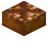
脆皮面包bakery:crusty_bread_block · 方块
 纸杯蛋糕展示柜
纸杯蛋糕展示柜bakery:cupcake_display · 方块?甜甜圈
bakery:donut · 物品?面团
bakery:dough · 物品
 抽屉
抽屉bakery:drawer · 方块
 发光浆果果酱
发光浆果果酱bakery:glowberry_jam · 方块发光浆果挞切片
bakery:glowberry_pie_slice · 物品
 发光浆果挞
发光浆果挞bakery:glowberry_tart · 方块
 烤培根三明治
烤培根三明治bakery:grilled_bacon_sandwich · 物品
 烤鲑鱼三明治
烤鲑鱼三明治bakery:grilled_salmon_sandwich · 物品
 铁长凳
铁长凳bakery:iron_bench · 方块
 铁椅子
铁椅子bakery:iron_chair · 方块
 铁桌
铁桌bakery:iron_table · 方块
 果酱卷
果酱卷bakery:jam_roll · 物品?果酱三明治
bakery:jam_sandwich · 物品
 罐子
罐子bakery:jar · 方块
 红砖水槽
红砖水槽bakery:kitchen_sink · 方块
 林茨蛋糕
林茨蛋糕bakery:linzer_tart · 方块林茨蛋糕切片
bakery:linzer_tart_slice · 物品
 MissLilitu饼干
MissLilitu饼干bakery:misslilitu_biscuit · 物品
 布丁
布丁bakery:pudding · 方块布丁切片
bakery:pudding_slice · 物品?法式咸派
bakery:quiche · 方块
 擀面杖
擀面杖bakery:rolling_pin · 物品
 三明治
三明治bakery:sandwich · 物品
 小烹饪锅
小烹饪锅bakery:small_cooking_pot · 方块
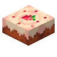
草莓蛋糕bakery:strawberry_cake · 方块草莓蛋糕切片
bakery:strawberry_cake_slice · 物品
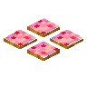
草莓釉面饼干bakery:strawberry_cookie_block · 方块?袋装草莓
bakery:strawberry_crate · 方块草莓纸杯蛋糕
bakery:strawberry_cupcake · 物品
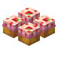
草莓纸杯蛋糕bakery:strawberry_cupcake_block · 方块草莓釉面饼干
bakery:strawberry_glazed_cookie · 物品
 草莓果酱
草莓果酱bakery:strawberry_jam · 方块
 街边招牌
街边招牌bakery:street_sign · 方块
 甜面团
甜面团bakery:sweet_dough · 物品
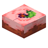
甜浆果蛋糕bakery:sweetberry_cake · 方块甜浆果蛋糕切片
bakery:sweetberry_cake_slice · 物品
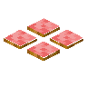
甜浆果釉面饼干bakery:sweetberry_cookie_block · 方块甜浆果纸杯蛋糕
bakery:sweetberry_cupcake · 物品
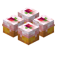
甜浆果纸杯蛋糕bakery:sweetberry_cupcake_block · 方块甜浆果釉面饼干
bakery:sweetberry_glazed_cookie · 物品
 甜浆果果酱
甜浆果果酱bakery:sweetberry_jam · 方块
 吐司面包
吐司面包bakery:toast · 物品
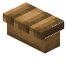
吐司面包bakery:toast_block · 方块
 篮子
篮子bakery:tray · 方块
 蔬菜三明治
蔬菜三明治bakery:vegetable_sandwich · 物品
 bakery:waffle
bakery:wafflebakery:waffle · 物品
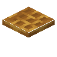
松饼bakery:waffle_block · 方块
 壁橱
壁橱bakery:wall_cabinet · 方块
 壁挂展示柜
壁挂展示柜bakery:wall_display · 方块?流浪烘焙师刷怪蛋
bakery:wandering_baker_spawn_egg · 物品